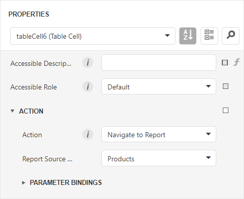
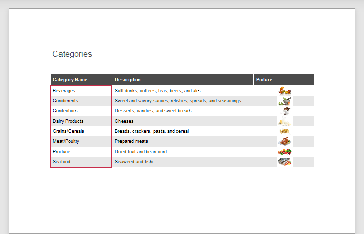
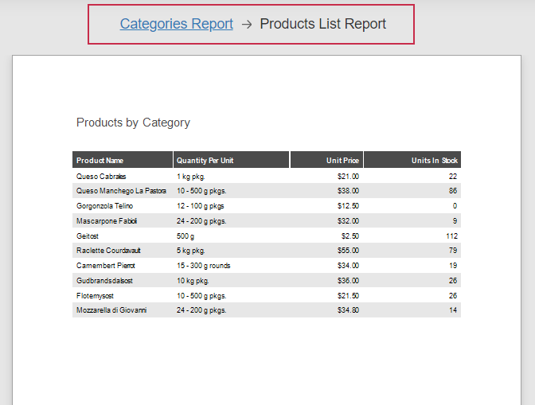
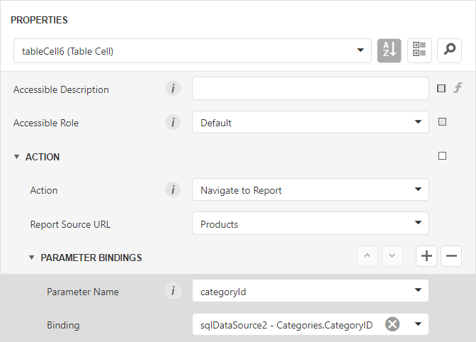
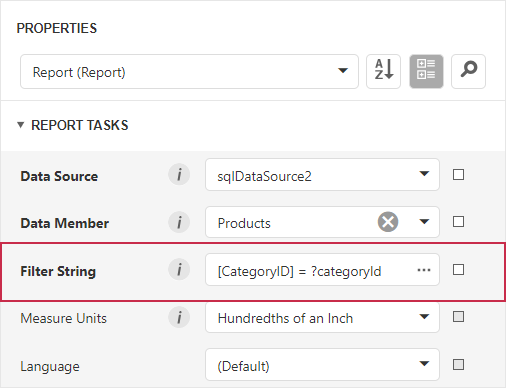
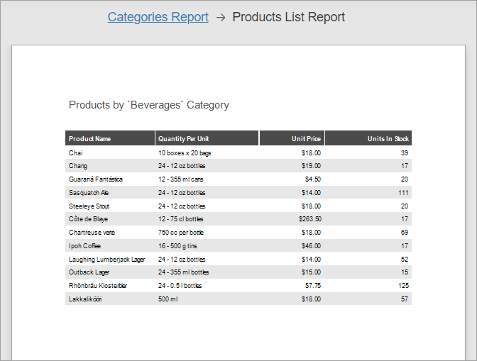

Create Drill-Through Reports
Follow this tutorial to create a drill-through report (a user can click a Category entry to invoke a detail report with Products). This report type keeps the original report compact while still allowing access to more detailed information.
The tutorial involves two main steps:
- Add a master-detail relationship between "Categories" and "Products" reports within one project.
- Use detail report parameters to filter records based on the selected category.
Add a Master-Detail Relationship between Reports
Define a master-detail relationship between Category and Product reports within a single project:
- Select the XRControl's element (Table Cell in this example) in the main report.
- Set its Action property to Navigate to Report.
- Assign the Report Source URL property to a detail report instance.

If you switch to Preview, you can click on a Category value in the table. The Preview window navigates to the detail report that contains all Product entries. The next step explains how to filter this list.

You can click "Categories Report" below the Document Viewer toolbar and navigate back to the original report.

Specify Parameter Binding to Display Required Data
You can specify parameters during detail report navigation. Use the Parameter Bindings property to limit displayed records (such as products) to a selected category.
Click the Parameter Bindings property and select the detail report parameter. Set Binding to the data field or parameter of the original report. In this example, Binding is set to the CategoryID field.

Set the following filter string in the detail report to display product records for the selected category.

Result
Switch to Preview and click on a category entry in the master report. The Preview navigates to the detail report that displays only products related to the selected category.
